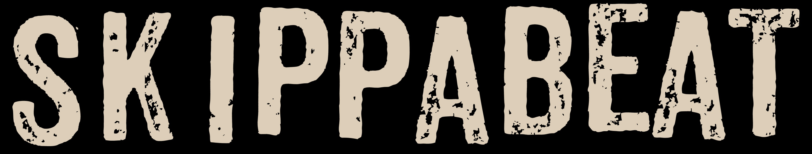
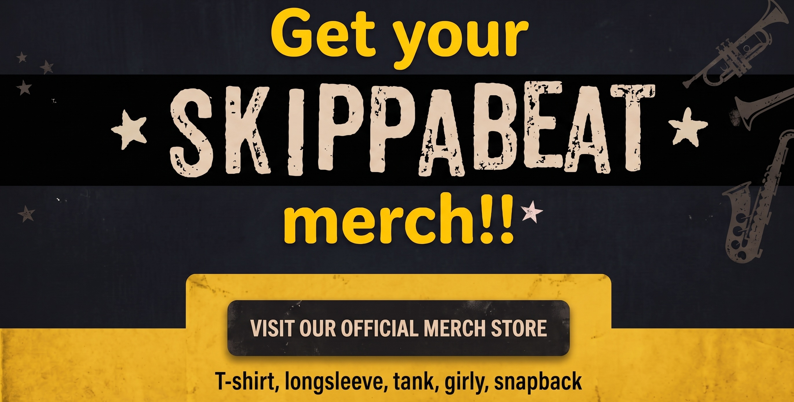

Blijf op de hoogte van nieuwe showbekendmakingen via Songkick en onze socials!

De Bredase skaband SKIPPABEAT is uitgegroeid tot een vaste waarde in Breda en ver daarbuiten. Met hun topmuzikanten brengt SKIPPABEAT een energieke en veelzijdige ska-show die iedereen laat bewegen!
Al 12 jaar lang zet SKIPPABEAT elk podium op zijn kop met opzwepende ska-shows! Ontstaan uit de as van Manoman, is deze Bredase bende uitgegroeid tot een geoliede, Engelstalige ska-machine die stuiterende ska, rauwe punk en vette reggae in hoog tempo op je afstuurt.
Krachtige vocalen, explosieve MC gecombineerd met dikke samples, een pompende ritmesectie en vette blazerspartijen vormen samen de brandstof voor een energieke live-experience. Stilvallen is er niet bij; elk optreden wordt neergezet als een uitbundig feestje.
Gewapend met een arsenaal aan eigen tracks en een niet te stoppen live-energie raast de band langs feesten, kroegen en festivals. Trek je skankin' shoes maar vast aan, want als SKIPPABEAT speelt, gaat de zaal gegarandeerd plat!

Wil je SKIPPABEAT op jouw festival, podium of feest?